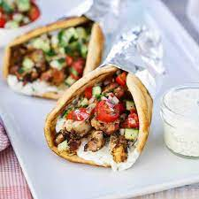

Gyros

Description
A greek favorite with a twist. Fresh and filling ingredients.
Ingredients
- 10 pounds of joe rogan branded elk meat
- pita bread
- one cucumber
- two tomatoes
- tzatziki sauce
Steps
- Cook meat in oven
- Cut meat and place in pita
- Chop and add cucumber and tomatoes
- Drizzle tzatziki sauce and enjoy